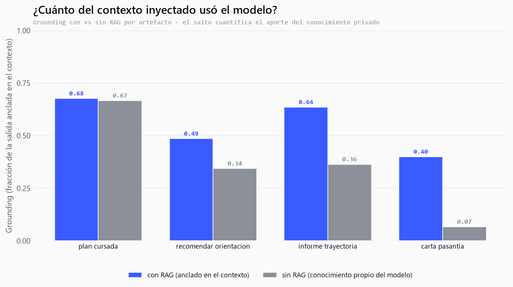

Informe Técnico · TP Integrador de Ciencia de Datos · UTN FRLP 2026
Generador Académico RAG
Un sistema de IA generativa que sintetiza artefactos académicos personalizados anclados en el historial real del grupo y el plan de estudios, mediante un pipeline RAG construido de punta a punta.
01Planificación y metodología
El objetivo es construir un sistema de IA generativa que, alimentado por dos bases de datos —una relacional con el historial académico del grupo y las correlatividades, y una vectorial con la documentación de la carrera— genere artefactos académicos personalizados: planes de cursada justificados, informes de trayectoria, cartas de pasantía, recomendaciones de orientación, diagnóstico grupal y simulaciones what-if.
El reencuadre central del proyecto fue pasar de un asistente de preguntas (que un SQL o NotebookLM resolverían) a un generador: cada salida es texto nuevo sintetizado, con razonamiento y estilo, no un campo de una tabla. Un SQL responde qué materias podés cursar; este sistema redacta qué conviene y por qué, cruzando notas, correlativas y patrón de rendimiento.
La metodología siguió el pipeline de Ciencia de Datos completo: ingesta y preprocesamiento de un corpus mixto, persistencia híbrida (relacional para lo tabular, vectorial para la documentación), análisis exploratorio, visualización, clustering, generación con control de tono y evaluación cuantitativa del anclaje (grounding).
02Datos, EDA y preprocesamiento
El corpus combina lo estructurado (notas, años y correlatividades) con lo no estructurado (chunks del plan de estudios), y cada parte se persiste en la base que le corresponde: lo tabular en una base relacional (SQLite), la documentación en una base vectorial (Chroma). Las fuentes son PDFs reales: los estados académicos y exports de exámenes de los seis integrantes del grupo, el Plan de Sistemas 2023 (correlatividades del Anexo I y equivalencias del Anexo II) y el Diseño Curricular completo (Ord. 1877), del que se extraen las fichas de las 36 materias con sus contenidos mínimos.
El preprocesamiento crítico fue el join entre el estado académico y el plan: los códigos institucionales no coinciden entre documentos, así que la clave de unión es el nombre de materia normalizado (minúsculas, sin tildes ni puntuación). Se parsearon las 36 obligatorias con sus correlativas, resolviendo casos borde como las integradoras, cuyo nombre se parte en dos líneas. El parseo produce 549 registros que se reparten entre las dos bases: 413 filas a la relacional (377 de estados académicos + 36 de correlatividades) y 136 documentos a la vectorial (100 chunks de prosa del diseño curricular + 36 fichas de materia con sus contenidos mínimos, del Anexo de la Ord. 1877).
El historial de notas de exámenes usa los nombres del Plan 2008, mientras que el estado académico ya migró a los del Plan 2023. Para que el cruce no pierda notas aprobadas por equivalencia, incorporamos el Anexo II del plan (régimen de equivalencias 2008↔2023) como tabla de canonización de nombres: toda materia se lleva a su nombre 2023 antes del join, con tolerancia a la truncación de nombres largos del PDF.
El export de exámenes resultó además más completo que el estado académico: contiene materias aprobadas (con su nota) que ni siquiera figuran como fila en el estado. Esas materias se incorporan al corpus como aprobadas, evitando que el planificador las recomiende como pendientes. En paralelo, se distingue el estado real de cada materia —aprobada, en curso («cursando», aún sin nota) o no iniciada— para que el plan de cursada excluya lo que ya se está cursando y ofrezca, además de las obligatorias habilitadas, las electivas del plan todavía disponibles.
El análisis exploratorio trabaja sobre 221 registros reales de notas (una entrada por materia aprobada con calificación numérica), correspondientes a los seis integrantes. Los promedios van de 8.0 a 8.7, un grupo parejo y de buen rendimiento; las diferencias aparecen al desagregar por área temática, que es lo que explota el diagnóstico grupal.


03Pipeline RAG e implementación
El pipeline se construyó en módulos independientes, cada uno con self-checks:
extract.py PDF → texto (pdfplumber) documents.py texto → documentos + correlatividades; normalizar() = clave de join db.py datos tabulares → SQLite (relacional); consultas SQL (historial, correlativas) ingest.py prosa del plan + fichas de materia (contenidos) → Chroma (vectorial); buscar() semántico rag.py retrieval híbrido (SQL + vector) → LLM (qwen2.5:14B vía Ollama); fallback si está apagado analisis.py DataFrame de notas reales (6 integrantes, desde SQLite) + agregaciones por área figuras.py EDA, radar, clustering (KMeans/PCA), t-SNE de embeddings generar.py 6 generadores de artefactos con control de tono evaluar.py grounding léxico + semántico + comparar_con_sin_rag()
Persistencia híbrida: cada dato en su base
El historial académico y las correlatividades son datos tabulares (alumno, materia,
nota, año; Nº de plan y correlativas): registros que se consultan con exactitud
—filtros, joins, agregaciones—, no con similitud semántica. Por eso viven en una
base relacional (SQLite, db.py). La documentación del plan —
prosa larga del régimen, perfil y alcances— va en la base vectorial (Chroma),
donde el matching por embeddings hace lo que un SELECT no puede. Meter lo
tabular en la vectorial habría sido usar búsqueda aproximada para un lookup determinístico;
la decisión de separarlos es deliberada y mejora exactitud y claridad.
La vectorización usa all-MiniLM-L6-v2 (el embedding por defecto de Chroma, local y offline). El retrieval es híbrido y combina las dos bases: relacional (consultas SQL que anclan exactamente las materias aprobadas de un alumno y las correlatividades) + vectorial (similitud de embeddings sobre la prosa del plan). Una misma consulta cruza ambas en un solo contexto. La generación corre sobre qwen2.5:14B vía Ollama; si Ollama está apagado, la parte RAG sigue funcionando y devuelve el contexto recuperado.
Arquitectura de ejecución híbrida
Todo el pipeline RAG —extracción, base relacional, embeddings, base vectorial y
recuperación— corre local en la máquina del grupo. Lo único que cambia de lugar es la generación del
LLM: como `rag.py` consume Ollama por HTTP (variable OLLAMA_URL), el modelo
puede correr en la misma PC (CPU) o en una GPU T4 gratuita de Google Colab, expuesta por
un túnel de URL fija. Esto permite usar un modelo grande (14B) con respuestas en segundos sin
GPU propia, sin cambiar una línea del pipeline. Es una decisión de despliegue: en producción el
sistema corre 100% local y offline; para la demo se aprovecha la GPU remota. Los prompts nunca
pasan por un proveedor de inferencia de terceros —corren en una VM efímera del propio
grupo—, preservando la privacidad de los datos académicos.
Estrategia de prompting
El sistema instruye al modelo a usar exclusivamente el contexto recuperado y a no inventar notas, materias ni correlatividades, pero también a interpretar y seleccionar: elegir los pocos datos relevantes y explicar qué revelan, en lugar de enumerar todas las notas. Cada artefacto define una tarea concreta y una estructura esperada (por ejemplo, la carta de pasantía exige primera persona, conectar fortalezas con competencias del puesto y no listar el historial). El control de tono (técnico, motivacional, honesto) reescribe el mismo dato en distinto registro: es lo que hace al sistema generativo y no un reporte fijo.
"Trabajás solo con los datos del contexto: no inventes ni supongas. Pero no sos un loro de datos: interpretá y seleccioná los datos relevantes y explicá qué revelan; nunca enumeres todas las notas."
04Clustering y espacio semántico
Sobre el perfil por área (estandarizado) se aplicó KMeans y se proyectó a 2D con PCA para visualizar grupos de perfiles afines. Por separado, se proyectaron las 36 obligatorias con t-SNE sobre sus embeddings: las materias de la misma área caen juntas, lo que valida que el espacio semántico capturó la estructura del plan, condición necesaria para que el recomendador por matching semántico funcione.


05Evaluación: grounding con/sin RAG
Qué medimos y por qué. El objetivo es cuantificar cuánto del contexto inyectado usa el modelo para responder y cuánto resuelve con su propio conocimiento. Eso es justo lo que captura el grounding: la fracción de la salida anclada en el contexto es lo que el modelo tomó del RAG; el complemento (1−grounding) es redacción o conocimiento propio. Y correr el mismo pedido con vs sin el contexto aísla el aporte del conocimiento privado: el salto entre ambos es cuánto pesó el RAG (Fig. 6).
Medimos el anclaje con cuatro métricas sobre tres ejes. (a) Solapamiento: el grounding léxico es la fracción de tokens informativos de la salida (materias, notas) presentes literalmente en el contexto —explicable, pero penaliza la paráfrasis— y el grounding semántico promedia el máximo coseno entre cada oración de la salida y los fragmentos del contexto (embeddings MiniLM), reconociendo la reformulación legítima. (b) Corrección factual: la precisión factual extrae los pares (materia, nota) que la salida afirma y verifica cada uno contra el registro real del alumno —mide acierto, no cercanía—. (c) Juicio de un LLM: la faithfulness usa el propio modelo como evaluador, puntuando de 0 a 1 cuánto se apoya la respuesta solo en el contexto.
La demo estrella compara el mismo pedido con RAG (contexto real) contra sin RAG (sin contexto). Promediando cuatro artefactos (plan de cursada, recomendación de orientación, informe de trayectoria y carta de pasantía) con qwen2.5:14B, el resultado más nítido es la precisión factual: con RAG es 1.0 —de cada par (materia, nota) que el modelo afirma, el 100% coincide con el registro real: cero notas inventadas— mientras que sin RAG el modelo no cita ningún dato verificable. La faithfulness juzgada por el LLM cae de 0.73 con RAG a 0.50 sin RAG, y el grounding de 0.55 a 0.36 (léxico) y 0.57 a 0.51 (semántico). En las cuatro métricas, con RAG > sin RAG: la evidencia medible de que el conocimiento privado es el corazón del producto, no un adorno.
Vale una lectura crítica. El grounding léxico premia la cita literal: un artefacto profesional que parafrasea e interpreta (como la carta, que por diseño no enumera notas) obtiene un léxico más bajo aun siendo correcto —por eso ronda 0.5 y no 1—; es la razón por la que sumamos la precisión factual, que sí mide acierto. Además, como la generación es estocástica, el valor absoluto de una corrida tiene varianza (entre corridas el léxico osciló ~0.55–0.64); lo robusto es la dirección (con RAG > sin RAG en las cuatro métricas) y la precisión factual de 1.0. Limitación de fondo: ninguna métrica detecta contradicciones lógicas sutiles, solo cercanía, corrección de pares y un juicio agregado.

06Análisis crítico y conclusiones
El sistema cumple el objetivo: construimos el pipeline RAG completo (no una caja negra) y lo usamos para generar, no para responder. La demo con/sin RAG y el grounding hacen visible y medible el valor del conocimiento privado.
Limitaciones
El grounding, aun en su versión semántica, no detecta contradicciones sutiles: mide cercanía con el contexto, no consistencia lógica con él; mide densidad de datos citados, no corrección del razonamiento. El recomendador ya cruza los contenidos mínimos de las materias (no solo sus nombres), pero las electivas no tienen ficha individual en el diseño curricular, así que sobre ellas se razona a nivel de régimen. Y la generación, anclada en el contexto y acotada por el lookup exacto de la base relacional, puede aun así deslizar matices imprecisos que solo una verificación de consistencia detectaría.
Trabajo futuro
Sumar las descripciones de las electivas (no detalladas en la ordenanza) para recomendarlas por contenido como ya se hace con las obligatorias; reforzar la evaluación con métricas de RAG más finas —faithfulness y answer/context relevancy con un LLM como juez, o precisión de recuperación (hit-rate / MRR) sobre el retriever— que capturen consistencia y no solo cercanía léxica; y consolidar la arquitectura híbrida (modelo grande en GPU para la demo, base local reproducible para producción).
El código, el notebook integrador y la web app de demostración en vivo acompañan este informe como entregables ejecutables.